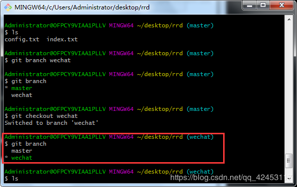
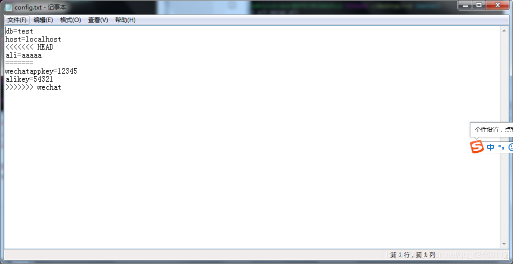

在开发中，遇到这样的情况怎么办？
网站已有支付宝在线支付功能，要添加"微信支付"，修改了两个文件，wechat.php、pay.php。
刚做到一半，突然有个紧急bug：支付宝支付后不能修改订单状态。你需要立即马上修改这个bug，需要修改的文件是，ali.php、pay.php。
问题是，pay.php文件，已经被你修改了过，而且尚未完成，直接在此基础上改，肯定有问题。把pay.php倒回去？那我之前的工作白费了。
此时你肯定会想：在做"微信支付"时，能否把仓库复制一份，不影响原仓库的内容，修改完毕后，再把副本上的修改合并过去。
好的，这时你已经有了分支的思想。
前面见过的master，即是代码的主干分支。
事实上，在实际的开发中，往往不会直接修改和提交到master分支上，而是创建一个dev分支，在dev分支上，修改测试，再把dev分支合并到master上。
如果有了分支，刚才的难题就好解决了。
在做"微信支付"时，我们创建一个wechat分支，把wechat分支commit，此时，master分支内容不会改变，因为分支不同。
当遇到紧急bug时，创建一个AliBug分支，修复bug后，把AliBug分支合并到master分支上。
再次从容切换到wechat分支上，接着开发"微信支付"功能，开发完毕后，把wechat分支合并到master分支上。
接下来我们详细地介绍一下。
查看所有分支
git branch
这样说明只有master分支，且当前处在master分支上，前面的*号代表当前处于的位置。
创建分支
git brand wechat这时我们查看分支
这时就有了两个分支，但是我们仍然处于master分支上。
接下来我们切换分支。
git checkout wechat
现在我们就处于wechat分支上了。接下来我们在wechat分支上进行一些修改。
现在config.txt文件被修改了，但此时，master分支上有一个紧急的bug需要你去处理，这时，你就得把手头上的工作保存起来，然后去处理bug。
我们输入
git add .
git commit -m "wechat todo"这样，我们就把在wechat分支上的工作进行了保存。
接下来，我们切换回master分支。
git checkout master这时候，神奇的事情发生了，看看你的工作目录，刚才增加的内容现在却不见了。我们要的就是这个效果，接下来，我们再创建一个分支用于修复bug。
git branch ali然后切换到ali分支
git checkout ali在该分支下，我们进行一些操作，在工作目录中创建一个文件，然后随意编写一些内容。
假设此时我们已经修复好了bug，那么我们就将修改的内容提交到该分支上，接下来就是将该分支合并到master分支上了。
我们先切换到master分支上，会发现我们刚才创建的文件在工作目录中消失了，然后我们输入
git merge ali这是，在ali分支上进行的文件修改操作就都能在工作目录中被找到了。
这时候，我们又可以切回到wechat分支，进行我们刚才未完成的工作。当完成后，我们就可以将该条分支也合并到master分支上。
删除分支
git branch -d wechat注意了，当我们在两个分支上修改了同一个内容时，在master分支上进行合并的时候，就会产生冲突，因为此时git无法确定你需要的是哪个版本的信息。
红色框线内的意思是说，编码config.txt，冲突(内容):config.txt中的合并冲突，自动合并失败;修复冲突，然后提交结果。我们看一下冲突的文件。

我们来解决一下冲突，如果我们对着三个值都需要的话，我们就直接把标记删了就行，如果哪个不需要，就把不需要的值删了，这里我就都留着了。
修改完成，我们重新提交一下就可以了。